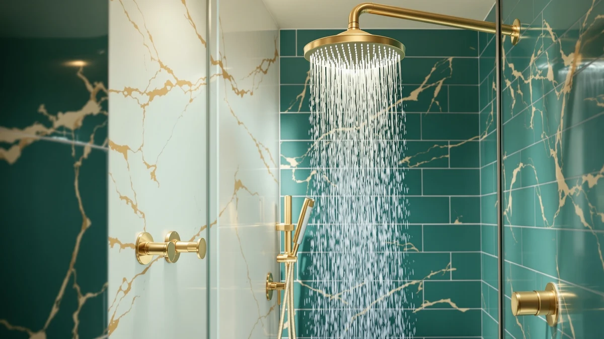

Plastic Shower Heads vs Metal: Which Is Better? (2026)
Prices and picks verified as of September 2026. Independent, reader-supported reviews.


Things to Know Before You Buy
- Plastic shower heads run lighter and cheaper, but they can crack or discolor faster under years of hot water and sun exposure near a window.
- Metal shower heads, usually brass or chrome-plated zinc, resist heat warping and hold their finish longer, though they cost two to four times as much.
- Neither material stops limescale on its own. Hard water buildup depends on your nozzle design and cleaning habits, not the housing material alone.
- Renters generally do better with plastic: it is cheap to replace and easy to swap back to the original fixture before moving out.
- If you have hard water or plan to stay in the home for years, the extra cost of a metal head usually pays off in fewer replacements.
The plastic shower heads vs metal debate comes down to three things: how much the fixture weighs on your arm, how it holds up against hard water over time, and how much you want to spend upfront. Both materials show up across the price spectrum, from $6 multi-packs to $100-plus solid brass fixtures, so price alone will not tell you which one to buy.
We compared build quality, verified owner reviews, and pricing across seven shower heads to see where each material actually earns its keep. Some buyers need a head that survives a decade of daily hot water without warping. Others need only a working replacement before their lease is up. This guide sorts out which situation calls for which material.
Quick Answer
Plastic shower heads make sense if you want a light, inexpensive fixture you can replace without much thought, like the Veken 11.8" Rain Shower Head. Metal shower heads make more sense if you have hard water, want a fixture that keeps its finish for years, or you are renovating a bathroom you plan to stay in, where a piece like the Veken All Metal 10" Shower or a HammerHead Showers solid metal head earns back its higher price over time.
What is Plastic Shower Heads?
Plastic shower heads are built from ABS or nylon housings around a plastic or rubber nozzle plate. Manufacturers favor these materials because they mold easily into wide rain-shower faces and multi-mode handheld shapes without adding weight to the arm or hose. Most budget and mid-range shower heads on Amazon, including the Isslly 4-pack and the VRQUB 5-mode fixed head in this comparison, use this construction.
The tradeoff shows up over time rather than on day one. A new plastic head sprays as well as a metal one right out of the box, and in the plastic shower heads vs metal comparison, plastic wins on weight, since a lighter head puts less strain on a handheld hose or an aging ceiling arm. UV exposure near a window and prolonged contact with 100-plus degree water can make plastic housings brittle after a few years, and the chrome-look finish some plastic heads use can flake where metal ones would only dull.
Plastic is also the better choice for anyone renting. You can unbox, install, and swap a plastic head back to the original fixture in minutes, and if it fails, replacing a $10 to $60 unit costs far less than replacing a $100 metal one.
What is Metal?
Metal shower heads use a brass, stainless steel, or zinc-alloy body, usually finished in chrome, brushed nickel, or matte black plating. The HammerHead Showers fixed and handheld models in this comparison are machined from solid brass, which is the same material plumbers use inside faucets because it resists corrosion from mineral-heavy water better than most alloys. The Veken All Metal 10" Shower pairs a metal face plate with a brass connector at the arm, the point where threads wear out fastest.
The extra weight is the first thing you notice picking one up, and reviewers consistently note that the added heft feels sturdier in hand, even though it also means more strain on a plastic ceiling arm or a thin handheld hose over years of use. Where plastic can crack or discolor, metal typically dulls or spots instead, and both problems respond to a vinegar soak or a light polish.
Metal construction costs more to manufacture, which is why the metal options here run from about $30 to $107, roughly two to ten times the price of the plastic alternatives. That price gap is the main reason metal shows up more often in owner-installed bathroom renovations than in quick rental fixes.
Head-to-Head: Build Quality & Durability
Durability is where the plastic shower heads vs metal question gets the clearest answer. HammerHead Showers markets its solid metal handheld specifically as an upgrade for buyers whose plastic heads cracked at the swivel joint, a failure that owners of budget plastic fixtures report far more often than owners of brass ones. Brass and zinc-alloy housings do not become brittle with heat cycling the way ABS plastic can, so a metal head installed today is more likely to still be working in five years than a plastic one exposed to the same daily hot water.
That does not mean every metal head outlasts every plastic one automatically. A cheap zinc-alloy head with thin chrome plating can pit and flake almost as fast as plastic discolors, and a well-made plastic head with a ceramic disc valve, like the flow-control switch on the Veken 11.8" Rain Shower Head, can run for years without a leak. The nozzle holes matter as much as the shell: silicone or rubber jets on either material resist limescale buildup better than rigid plastic or bare metal nozzles, so check the nozzle spec, not only the housing, before assuming metal wins on paper.
Metal's real edge is at the connection points. Threads on a metal arm or hose connector rarely strip, while plastic threads can round off after repeated removal for cleaning, which matters if you plan to descale your shower head regularly in a hard water area.
Head-to-Head: Price & Value
Price is the widest gap in this comparison. The plastic options we researched range from $6.29 for the Isslly 4-piece set to $67.99 for the larger Veken rain shower head, while the metal options start at $29.95 for the HammerHead Showers fixed head and reach $106.99 for the Veken All Metal 10" Shower. On sticker price, plastic wins outright.
Value looks different once you factor in replacement cost. A plastic head that needs swapping every two to three years in a hard water home ends up costing close to what a single metal head costs once, without the labor and hassle of reinstalling. For a bathroom you plan to keep for five or more years, the metal option's higher upfront price spreads out to a lower annual cost, even though it asks for more cash today.
Head-to-Head: Use Experience
Day to day, weight is what you feel first. A handheld plastic shower head sits lighter in your hand and puts less drag on the hose, which matters if you are holding it one-handed to rinse a kid or a pet. Owners of the HammerHead Showers solid metal handheld report that the extra heft feels premium in the shower but also makes one-handed use more tiring over a long rinse.
Temperature is the second difference reviewers mention. Metal conducts heat, so a metal shower head warms up with the water and can feel hot to the touch during a long shower, while plastic stays close to room temperature no matter how hot the water runs. That is a small thing until you have kids reaching for the fixture or you are stepping in and out of a shared shower.
Neither material changes water pressure or spray pattern on its own. Pressure and pattern depend on the nozzle design and flow restrictor inside the head, which is why a $10.90 plastic 5-mode head can outperform a plain metal head on spray variety, even at a fraction of the price. Once you compare specific models rather than materials in the abstract, the plastic shower heads vs metal question becomes less about which material sprays better and more about which one you want to hold and how long you expect it to last.
When to Choose Plastic Shower Heads
Choose plastic if you are renting and want a fixture you can install now and swap back before you move out. The low cost of models like the Isslly 4-piece set means a failure is an inconvenience, not a real loss, and the light weight makes them easy to package back into their original box. Plastic also suits anyone testing out a spray style, like a rain head versus a handheld, before committing to a pricier metal version. If your water is relatively soft and you are not planning to stay in the home for years, plastic gets you most of the performance at a fraction of the price.
When to Choose Metal
Choose metal if you own your home, have hard water, or you are simply tired of replacing a cracked plastic head every couple of years. A solid brass fixture like the HammerHead Showers models or the Veken All Metal 10" Shower costs more upfront, but the connection threads and housing hold up to repeated descaling, which matters if your water leaves visible mineral deposits. Metal is also the better call for a shared family bathroom, where a fixture gets handled roughly and needs to survive years of daily use without the swivel joint loosening or the housing discoloring.
Our Top Picks
These three picks show how the plastic shower heads vs metal tradeoff plays out at different price points, from a light everyday plastic rain head to a solid metal upgrade built for hard water.

Editor’s Pick
Veken 11.8" Rain Shower Head
A lightweight plastic rain head with a wide 11.8-inch face, best for renters who want strong coverage without the cost of a metal fixture.
$59.99
Check Price on Amazon
Best Value
Veken All Metal 10" Shower
A solid metal rain head with a brass connector, built for owners in hard water areas who want a fixture that holds its finish for years.
$106.99
Check Price on Amazon
Premium Choice
Veken 11.8" Rain Shower Head
The same wide plastic rain face in an alternate finish, a good pick if you want the Editor's Pick's coverage with a different look on the wall.
$67.99
Check Price on AmazonFrequently Asked Questions
Do metal shower heads last longer than plastic ones?
Generally yes. Brass and zinc-alloy housings resist heat cycling and corrosion better than ABS plastic, and owners report fewer cracked swivel joints on metal fixtures. A well-made plastic head with a ceramic disc valve can still last for years, so build quality within a material matters as much as the material itself.
Does a metal shower head resist hard water buildup better than plastic?
Not directly. Limescale forms based on nozzle design and how often you descale the head, not the housing material. A metal head resists corrosion at the threads and connectors better, but you still need to soak either material in vinegar periodically in a hard water area.
Are plastic shower heads safe to use with hot water?
Yes, plastic shower heads are designed to handle standard residential hot water temperatures. Extended exposure to near-boiling water and direct sunlight over several years can make some plastics more brittle, which is why quality varies more by manufacturer than by material alone.
Is a metal shower head worth the extra cost?
It depends on how long you plan to keep the fixture. If you own your home and expect to use the same shower head for five or more years, the higher upfront cost of a metal head typically works out to a lower cost per year than replacing a plastic head repeatedly.
Can I install a metal shower head myself?
Most metal shower heads thread onto a standard shower arm the same way plastic ones do, so no special tools are required beyond plumber's tape and, in some cases, a wrench to snug the connection.
Final Verdict
The plastic shower heads vs metal decision splits mainly on how long you plan to keep the fixture and what your water is like. If you want a light, affordable head you can install today and replace without a second thought, the Veken 11.8" Rain Shower Head in plastic covers most bathrooms well. If you have hard water or you are renovating a home you plan to stay in, a metal option like the Veken All Metal 10" Shower or a HammerHead Showers solid metal head costs more now but holds its finish and connections longer.